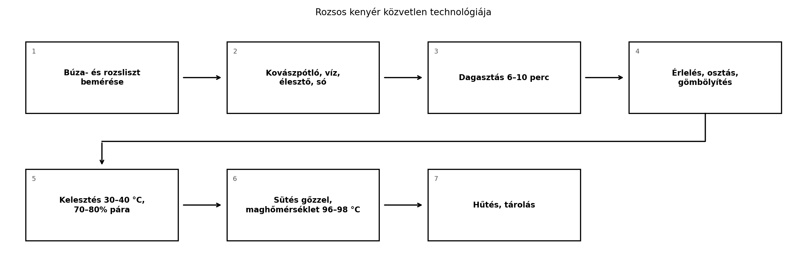
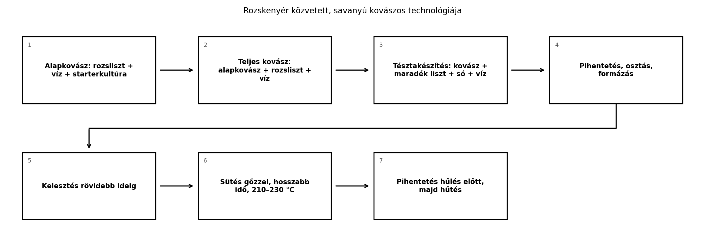

Egy pékségben a hajnali sorozatban gyakran egymás mellett készül a világos búzakenyér, a rozsos kenyér és a teljes rozskenyér. A rozsos kenyér illata még hasonlít a búzakenyérére, a rozskenyér viszont savanykás, tömörebb bélű, és egészen másként viselkedik a dagasztóban. Ha a pék búzakenyér-paraméterekkel dolgozik rozsliszttel, ragadós, sületlen, kenhetetlen bélzetet kaphat. Ennek oka a rozsliszt sajátos összetétele és enzimrendszere. A megoldás a savanyítás: a rozsos kenyérnél rövidebb, kovászpótlóval támogatott úton, a valódi rozskenyerénél pedig hosszú, savanyú kovásszal.
A búzalisztből készült tésztában a sikér rugalmas hálózata tartja meg az erjedéskor keletkező szén-dioxidot. A rozsliszt is tartalmaz fehérjét, de sokkal kevésbé képes ilyen hálózatot kialakítani. Ennek oka, hogy a rozsban a sikérképző fehérjék aránya és minősége eltérő, a tészta pedig a nagy mennyiségű nyálkaképző pentozán miatt inkább képlékeny, ragadós, kevésbé rugalmas lesz. A pentozánok olyan poliszacharidok, amelyek a víz nagy részét megkötik, ezért a rozstészta viszonylag sok vizet vesz fel, és nyúlós, kenhető állagú.
Definíció. A pentozánok a rozslisztben jelentős mennyiségben előforduló, öt szénatomos cukoregységekből felépülő nyálkaképző poliszacharidok. A búzalisztben is vannak, de a rozsban nagyobb a szerepük: erősen duzzadnak, vizet kötnek meg, és a tészta viszkoelasztikus, nyálkás jellegét adják.
A rozsliszt másik kulcsproblémája a magas amilázaktivitás. A rozsszemekben – különösen a csírázott vagy nedves évjáratú tételekben – az alfa-amiláz enzim hőállóbb, mint a búzáé, és a kemencében, a keményítő csirizesedésének hőmérsékletén is aktív marad. Ha a tésztát nem savanyítjuk, az amiláz a sütés első szakaszában nagy mennyiségű keményítőt bont le dextrinekké és cukrokká, a bélzet pedig ragadós, nedves, sületlen marad.
Definíció. A savanyítás a rozstészta pH-jának csökkentése tejsav- és ecetsavtermelő kovászos erjedéssel vagy engedélyezett savanyító készítménnyel. A savas közeg gátolja a hőálló amilázok működését, javítja a tészta gázmegtartását, aromát ad, és hozzájárul a termék mikrobiológiai stabilitásához.
Szabály. A rozsos kenyér alacsonyabb rozshányadú (például 20–50% rozsliszt, 80–50% búzaliszt; tanulási példa, ellenőrizendő), ezért gyakran elegendő enyhe savanyítás vagy kovászpótló. A rozskenyér magas rozshányadú (jellemzően legalább 60% rozsliszt, de lehet 100% rozs is; tanulási példa, ellenőrizendő), ezért rendes savanyú kovászt vagy starterkultúrát igényel.
A savanyítás hatását pH-értékkel vagy savfokkal mérjük. A rozskovász optimális pH-ja a Péksütemény-kovászok és előtészták, a rozskovász gyakorlata alfejezet szerint 3,8–4,2 (tanulási példa, ellenőrizendő). A kész rozstészta pH-ja általában 4,2–4,8 között van (tanulási példa, ellenőrizendő); az ennél magasabb érték nem véd eléggé az amilázoktól.
A rozsos kenyér és a rozskenyér gyártása közötti fő különbség az idő- és a savanyítási stratégia. A rozsos kenyér közvetlen technológiával készülhet: a lisztkeverék, a víz, az élesztő, a só és egy engedélyezett kovászpótló vagy savanyító készítmény rövid érleléssel kerül a kemencébe. A rozskenyér ezzel szemben közvetett, kovászos technológiát igényel: a rozsliszt egy részéből savanyú kovászt vezetnek, amely hosszú idő alatt termeli meg a savakat és az aromákat.


A közvetlen technológia célja, hogy rövid idő alatt, egyszerű gépparkkal is elérhető legyen a rozsos íz és a megfelelő bélzet. A savanyítást itt nem hosszú kovászvezetéssel, hanem kovászpótlóval vagy savanyító készítménnyel biztosítjuk.
Definíció. A kovászpótló olyan késztermék, amely szárított kovászból, savanyító anyagokból, malátalisztből vagy egyéb technológiai segédanyagokból áll, és a tésztához keverve a rozskovászhoz hasonló savasságot, aromát és enzimstabilizáló hatást ad. Az összetételt és az adagolást a gyártói adatlap rögzíti.
Figyelem. A kovászpótló adalékanyagokat vagy enzimeket is tartalmazhat; csak az élelmiszer-adalékanyagokról szóló 1333/2008/EK rendelet és a Magyar Élelmiszerkönyv előírásai szerint engedélyezett készítmény használható. A pontos megnevezés és adagolás gyártónként eltér, ezért ellenőrizendő: a termék jelölésén szereplő felhasználási utasítás és a beszállítói specifikáció.
A rozsos kenyér tipikus lisztaránya 70% búzaliszt (például BL 80) és 30% rozsliszt (például RL 90) (tanulási példa, ellenőrizendő). A tésztakitermelés (TA) jellemzően 158–165% (ellenőrizendő: üzemi technológiai lap).
Számítás. Kovászpótló adagolása a lisztre vetítve. Ha a gyártó 2% adagolást ír elő, és a tétel 100 kg lisztkeverékből készül, akkor:
Ellenőrzés: a tészta teljes tömege a lisztre, vízre, élesztőre, sóra és kovászpótlóra együtt ésszerű, azaz kb. 160–170 kg.
A technológiai sorrend:
A valódi rozskenyér ízét és eltarthatóságát a hosszú, savanyú kovászos erjedés adja. A kovász lehet két- vagy háromlépcsős. A gyakorlatban gyakran háromlépcsős rozskovászt vezetnek, de kisebb üzemekben az egyszerűsített kétlépcsős is elegendő.
Definíció. A többlépcsős kovász olyan savanyú kovász, amelyben a rozslisztet és a vizet több részletben, egymást követő érlelési lépésekben adják a kovászhoz, így a tejsav- és ecetsav-baktériumok, valamint az élesztők fokozatosan szaporodnak el, és a savösszetétel kiegyensúlyozott lesz.
Szabály. A rozskenyér kovászához a teljes rozsliszt egy meghatározott hányadát, leggyakrabban 40–60%-át használjuk fel (ellenőrizendő). Például 40% kovásznagyság azt jelenti, hogy a teljes rozsliszt 40%-a kerül a kovászba, a többit a tésztakészítéskor adjuk hozzá. A kovász TA-ja általában 150–180% (ellenőrizendő).
Háromlépcsős kovász (tanulási példa):
Számítás. Tegyük fel, hogy 100 kg teljes rozs- és búzalisztből készítünk rozskenyeret, 80% rozsliszttel és 20% búzaliszttel. A rozsliszt mennyisége 80 kg, a búzaliszté 20 kg. A kovásznagyság legyen 50% a rozslisztre vetítve, a kovász TA-ja 180. Ekkor:
A tésztához adandó maradék rozsliszt: , a búzaliszt 20 kg, só például 2,0 kg a teljes lisztre vetítve, és a szükséges további víz a kívánt tészta-TA eléréséhez. Ha a tészta TA-ja 165 (a teljes lisztre), akkor a teljes szükséges víz:
Ebből a kovászvíz 32 kg, tehát a dagasztóvíz:
Ellenőrzés: a tészta összetevői: kovász 72 kg + rozsliszt 40 kg + búzaliszt 20 kg + só 2 kg + dagasztóvíz 33 kg = 167 kg. Ez a tészta teljes tömege. A lisztre vetített összes víz: 32 kg (kovász) + 33 kg (dagasztó) = 65 kg, ami 100 kg lisztre 65%, tehát TA = 165%. A számítás helyes.
Példa. Egy pékség 10 kg rozslisztből rozskenyérhez készít kovászt. A kovásznagyság 30%, a kovász TA-ja 175. Mennyi lisztet és vizet mérjünk a kovászba? A rozsliszt 10 kg, tehát kovászliszt: . Kovászvíz: . A kovász tömege . A tésztához marad rozsliszt, és a dagasztóvizet a teljes TA-ból számoljuk.
A rozskenyér tésztájának készítésekor a kovászt a maradék liszttel, vízzel és sóval dagasztjuk. A tésztahőmérséklet 26–28 °C (ellenőrizendő). A kész tészta rövid, 10–20 perces pihentetést kap, majd osztás és hosszformázás következik. A kelesztési idő rövidebb, mint a búzakenyérnél: 25–45 perc, mert a savanyú tészta kevésbé rugalmas, és a túlkelesztés összeesést okoz (ellenőrizendő). A sütés hosszabb, 40–60 perc 210–230 °C-on, gőzzel, amíg a maghőmérséklet eléri a 97–99 °C-ot (tanulási példa, ellenőrizendő).
Higiénia. A rozskovász hosszú érlelése alatt a kovászt lefedve, tiszta edényben, a nyers hústól, tojástól és tejes termékektől elkülönítve kell tartani. A kovász hőmérsékletét rendszeresen mérjük, mert a túl magas hőmérsékleten nemkívánatos mikroorganizmusok is elszaporodhatnak.
HACCP. A rozskenyér minőségi ellenőrzési pontjai: a kovászérés hőmérséklete és ideje, a kész tészta pH-ja; a kritikus szabályozási pont (CCP) a sütési maghőmérséklet. A pH-t szúrópróbaszerűen vagy folyamatosan ellenőrizhetjük; ha a kész tészta pH-ja 4,8 feletti (ellenőrizendő: üzemi HACCP-határ), a tételt át kell dolgozni vagy meg kell hosszabbítani az érlelést.
Allergén. A rozsos kenyér és a rozskenyér gluténtartalmú gabonát (búzát, rozsot) tartalmaz. A gluténmentes termék gyártósorától térben, eszközzel és időben el kell választani; a lisztpor keresztszennyező lehet. Ha egy üzemben gluténmentes termék is készül, a rozsos termék gyártása csak teljes takarítás után történhet.
Gépbiztonság. A dagasztógép, az osztó- és formázógép, valamint a kemence csak betanítás után, felügyelettel kezelhető. Tisztítani csak leállított, áramtalanított gépen szabad, a forgó részek teljes megállása után. A rozstészta ragadósabb, ezért a dagasztóteknő oldaláról való lekaparásnál különösen fontos a gép kikapcsolása.
A rozsos kenyér és a rozskenyér minőségi jellemzői jelentősen eltérnek a búzakenyértől.
Külső jellemzők:
Bélzet:
Kelesztési sajátosságok:
Sütési sajátosságok:
Egy kisüzemi pékségben a pék hétfőn új rozsliszt-szállítmányt vett át, és a megszokott recept szerint készített rozskenyeret. A kovász szépen megkelt, a tészta jól formázható volt, mégis a sütés után a kenyér bélzete ragadós, gyurmás lett, a szeleteléskor a késre tapadt. A pék ellenőrizte a kovász pH-ját, és 5,1-et mért a szokásos 4,2 helyett. Kiderült, hogy az új rozsliszt amilázaktivitása magasabb volt, és a kovász savanyítása nem érte el a szükséges mértéket. A megoldás a kovásznagyság növelése, az érlelési idő hosszabbítása vagy erősebb starterkultúra használata volt. A tanulság: minden liszttételnél ellenőrizni kell a kovász pH-ját és a tészta savasságát; a megszokott paramétereket az új liszthez kell igazítani.
Cél: 2 kg kész rozskenyér előállítása 80% rozsliszt és 20% búzaliszt felhasználásával, házi vagy tanműhelyi körülmények között.
Eszközök és anyagok: rozsliszt, búzaliszt, víz, só, starterkultúra vagy érett rozskovász, dagasztóteknő vagy dagasztógép, mérleg, hőmérő, kelesztőtál vagy szakajtó, kemence vagy sütő, gőzfejlesztő eszköz, pH-mérő vagy savfok-mérő (ha van).
Higiénia. Tiszta munkaruha, hajháló, ékszer nélkül, kézmosás a munka megkezdése előtt és a liszt, tojás, tej vagy más allergén érintése után. A munkaterületet, az eszközöket és a mérleget előtte tisztítsuk meg. Fertőző betegség esetén ne dolgozzunk élelmiszerrel.
Gépbiztonság. Ha dagasztógépet használunk, ellenőrizzük a védőburkolatot, a vészleállítót és a reteszelést. A gép kikapcsolása és a forgó részek megállása előtt ne nyúljunk a teknőbe. A forró kemencéhez csak kesztyűvel nyúljunk.
Anyagszükséglet (2,0 kg késztömeg, tanulási példa). Feltételek: sütési + hűlési veszteség 12%, TA 165 (víz 65%), só 2%. Tészta: ; összes liszt: (rozs 1,09 kg, búza 0,27 kg); kovászliszt: a rozsliszt 40%-a, 0,44 kg; kovászvíz (TA 180): 0,35 kg; összes víz: , ebből dagasztóvíz 0,53 kg; só: 0,027 kg (ellenőrizendő: üzemi technológiai lap).
Lépések:
Ellenőrzési pontok:
Dokumentálás: Jegyezzük fel a kovász dátumát, a liszt tételazonosítóját, a kovász pH-ját, a kelesztési időt, a sütési hőmérsékletet és maghőmérsékletet. Ez a HACCP-napló része.
Termék: rozsos kenyér, hosszú, 1,0 kg késztömeg; 167 kg tésztából 146 db (146 × 1,14 kg = 166,4 kg ≤ 167 kg).
| Nyersanyag | Lisztre vetített % | Mennyiség (kg) | Megjegyzés |
|---|---|---|---|
| Búzaliszt BL 80 | 70,0 | 70,0 | 20–25 °C |
| Rozsliszt RL 90 | 30,0 | 30,0 | szitálva |
| Víz | 60,0 | 60,0 | hőmérséklet a tésztahőmérséklethez |
| Só | 2,0 | 2,0 | finomra őrölt |
| Sütőélesztő | 3,0 | 3,0 | vízben felfuttatva |
| Kovászpótló | 2,0 | 2,0 | gyártói adagolás szerint |
| Összes tészta | – | 167,0 | TA 160; tésztahozam 167 kg / 100 kg liszt |
Műveleti paraméterek:
Allergének: gluténtartalmú gabonafélék (búza, rozs). A kovászpótló tartalmazhat árpamalátát (glutén), ezért a csomagolást ellenőrizni kell. Keresztszennyeződésre figyeljünk, ha az üzemben gluténmentes termék is készül.
HACCP- és minőségi pontok: A kritikus szabályozási pont a sütési maghőmérséklet (96–98 °C), amely a mikrobiológiai biztonságot és az átsültséget biztosítja. A kelesztési idő és a féregmentesség (idegen anyag) is ellenőrzendő. A késztermék bélzete rugalmas, nem ragadós, héja egyenletes barna.
A technológiai lap számszerű értékei tanulási példák, amelyeket az üzemi technológiai lap, a lisztvizsgálati adatok és a gyártói utasítás szerint ellenőrizni kell (ellenőrizendő).
A rozsos kenyér és a rozskenyér minőségét érzékszervi és fizikai vizsgálattal ellenőrizzük.
Mért jellemzők: tömeg, térfogat, fajlagos térfogat (térfogat/tömeg). A rozskenyér fajlagos térfogata általában kisebb, mint a fehér kenyéré. A pontos határértékek a Magyar Élelmiszerkönyv és a termékleírás szerint ellenőrizendők.
Hiba: Ragadós, gyurmás bélzet a rozskenyérben. Ok: A kovász pH-ja túl magas, az amilázok túlbontották a keményítőt. Megelőzés: Ellenőrizzük a kovász pH-ját, növeljük a kovásznagyságot vagy az érlelési időt.
Hiba: A rozstészta összeesik a kelesztőben vagy a sütőben. Ok: Túlkelesztés, túl lágy tészta, túl magas kelesztési hőmérséklet. Megelőzés: Csökkentsük a kelesztési időt, tartsuk a TA-t az előírt értéken, ne engedjük 40 °C fölé a kelesztőt.
Hiba: Sápadt, repedezett héj. Ok: Elégtelen gőzölés, túl alacsony sütési hőmérséklet, kiszáradt tésztafelület. Megelőzés: Használjunk elegendő gőzt, ellenőrizzük a kemence hőmérsékletét, a kelesztő páratartalmát.
1. feladat (A) Sorolja fel a rozsos kenyér és a rozskenyér közötti fő technológiai különbségeket!
2. feladat (A) Mennyi kovászpótló szükséges 250 kg lisztkeverékhez, ha az adagolás 2%?
3. feladat (B) Egy rozskenyérhez 120 kg rozslisztet és 30 kg búzalisztet használunk. A kovásznagyság 45% a rozslisztre, a kovász TA-ja 170. Számítsa ki a kovászliszt, a kovászvíz tömegét és a kovász össztömegét!
4. feladat (B) Az előző feladatban a tészta TA-ja 163 a teljes lisztre. Mennyi dagasztóvizet kell adni a kovászon felül?
5. feladat (C) Egy rozskenyér bélzete ragadós, a kovász pH-ja 5,2. Mit tenne a gyakorlatban? Indokolja a savanyítás szerepét!
6. feladat (D) Tervezze meg egy 80% rozs, 20% búza összetételű rozskenyér háromlépcsős kovászát: adja meg a lépéseket, a kovásznagyságot, a TA-t és az érlelési időt! Milyen HACCP-ellenőrzéseket végezne a folyamatban?
1. feladat A rozsos kenyér magasabb búzaliszt-arányú (pl. 70% búza, 30% rozs), közvetlen technológiával, kovászpótlóval készül. A rozskenyér legalább 60% rozslisztet tartalmaz, savanyú kovásszal, közvetett technológiával. A rozskenyér tésztája savasabb, kelesztési ideje rövidebb, sütési ideje hosszabb.
2. feladat .
3. feladat Kovászliszt: . Kovászvíz: . Kovász tömege: .
4. feladat Teljes liszt: . Teljes szükséges víz: . Dagasztóvíz: . Ellenőrzés: összes víz 37,8 + 56,7 = 94,5 kg = 150 kg · 0,63 → TA 163 ✓. Tészta (3 kg sóval): 91,8 + 66 + 30 + 56,7 + 3 = 247,5 kg; ez a tésztahozam (165 kg tészta 100 kg lisztből), nem a TA.
5. feladat A magas pH (5,2) azt jelzi, hogy a savanyítás elégtelen. Az amilázok aktívak maradnak, a keményítő lebomlik, ezért a bélzet ragadós. Gyakorlati megoldás: növelni a kovásznagyságot, meghosszabbítani az érlelést, ellenőrizni a starterkultúra aktivitását, szükség esetén erősebb kultúrát használni. A pH-t 4,2–4,5 alá kell csökkenteni (ellenőrizendő).
6. feladat Háromlépcsős kovász javaslat: 1) Alapkovász: a rozsliszt 10%-a, TA 200, 26–28 °C, 4–6 h; 2) Teljes kovász: újabb 30% rozsliszt, TA 180, 28 °C, 4–6 h; 3) Termelőkovász: további 10% rozsliszt, TA 170, 20–25 °C, 8–12 h. A teljes kovásznagyság 50%. HACCP-ellenőrzések: kovász hőmérséklete és ideje, pH minden lépés végén, tészta pH-ja, sütési maghőmérséklet. A dokumentálás a kovásznaplóban.
A rozsos kenyér és a rozskenyér gyártásának kulcsa a savanyítás. A rozsliszt magas pentozántartalma és hőálló amilázai savas közeg nélkül ragadós, sületlen bélzetet okoznak. A rozsos kenyér közvetlen technológiával, kovászpótlóval készül, jellemzően 20–50% rozsliszt hozzáadásával. A rozskenyér magas rozshányadú, savanyú kovásszal, közvetett technológiával; a kovásznagyság 40–60%, a kovász TA-ja 150–180, pH-ja 3,8–4,2 (tanulási példák, ellenőrizendők). A kovászliszt és kovászvíz számítása a teljes lisztre vetített százalékból indul ki. A kelesztés rövidebb, a sütés hosszabb, a maghőmérséklet 97–99 °C. A minőségi jellemzők közé tartozik a tömör, enyhén nedves, nem ragadós bélzet és a kellemes savanykás íz. Továbbvitt eredmény: a rozs- és rozskenyerek savanyítási folyamata, pH-szabályozása és mikrobiológiai stabilitása közvetlenül felhasználható a Kenyérbetegségek és a terméköregedés alfejezetben, ahol a nyúlósodás (rope) és a penészedés megelőzését tárgyaljuk.